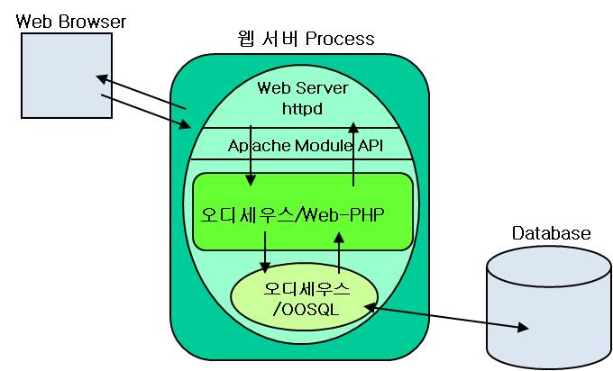

오디세우스/Web-PHP은 Web과 오디세우스/OOSQL
데이터베이스 시스템을 연결해주는 Web-DBMS 게이트웨이(gateway)로서,
오디세우스/OOSQL을 사용하는 웹 기반 데이터베이스 응용프로그램 작성에 사용된다.
오디세우스/Web-PHP는 웹기반 데이터베이스 응용프로그램 작성방법으로
웹 페이지 작성을 위한 HTML 태그(tag)를 제공하며 PHP 언어로 된 DB API를 제공한다.
사용자는 HTML 태그와 PHP 언어로 된 DB API를 사용하여 웹 페이지를 작성하듯이
웹기반 데이터베이스 응용프로그램을 작성할 수 있다. 오디세우스/Web-PHP는 이러한
사용의 편의성과 더불어 수십만 건의 질의 결과를 단 수십~수백ms 이내에 처리할 수
있는 빠른 성능을 제공한다.
오디세우스/Web-PHP은 Web Server와
오디세우스/OOSQL 간의 연결을 담당하는 게이트웨이로서 Apache Module API를
사용하여 연결한다. Apache Module API 기술은 오디세우스/OOSQL,
오디세우스/Web-PHP, 그리고 Web Server를 하나의 프로세스 내에서 수행되도록
하는 기술로서, 기존에 널리 사용되고 있는 CGI방식의 문제점인 프로세스
생성 및 프로세스간 통신 부담을 제거하여 시스템의 성능을 극대화 시킨
기술이다.

 수십만 건의 질의 결과를 빠르게
처리
수십만 건의 질의 결과를 빠르게
처리
 최적화된 대규모
질의 결과 처리기 탑재 최적화된 대규모
질의 결과 처리기 탑재
Apache Module API를 사용한 진보된 방식의
웹과 DBMS의 연동 제공
기존의 CGI 방식보다
빠른 사용자 요청 처리
기존의 CGI 방식으로
발생하는 프로세스 생성 및 통신 부하를 감소시킴
용이한 응용 프로그램
개발
웹 프로그래밍을 위해 가장 널리 사용되는 언어인 PHP로 응용 프로그램 개발 가능
사용자 정의 함수 지원
사용자가 C 언어로
작성한 함수를 웹 페이지 내에서 수행 가능
사용자 정의
함수를 사용한 오디세우스/Web 기능 확장 가능
멀티미디어 데이터(비디오, 오디오,
이미지등)를 사용하는 웹 응용프로그램 작성에 적합
멀티미디어 타입
데이터의 저장 및 브라우징 기능 제공
동적 수정(Dynamic Update) 기능 제공
Web을 통한 데이터베이스 변경 사항이 즉시 텍스트 정보 검색에 반영(Immediate Update)
텍스트 정보
검색이 바로 반영되므로 데이터베이스 변경을 위한 시스템 정지가
필요 없음
다중 서버 지원
다중 사용자에 의한 동적 수정
지원
보안 기능 제공
웹 페이지 단위의
액세스 허용 및 제한 기능 제공
오디세우스/Web-PHP는 가장 널리 사용되는
웹 프로그래밍 언어인 PHP로 응용프로그램을 작성할 수 있게 해준다.
이를 위해, 오디세우스/Web-PHP는 오디세우스/OOSQL의 기능을 사용할 수 있도록
PHP 언어로 DB API들을 제공한다. 제공되는 DB API는 ODBC API와 유사하다.
그림 2는 간단한 웹 응용 페이지를 보인 것으로 웹 페이지에 PHP 코드로 DB API를
사용하여 데이터베이스의 내용을 출력하는 기능을 수행한다.
사용된 PHP 코드는 월스트리트 저널 테이블 WSJ로부터 'korea'라는 키워드를
제목으로 가진 문서들의 제목과 날짜를 테이블 형태로 정렬하여
이를 사용자에게 보여주는 기능을 수행한다.
<HTML>
…
<TABLE>
<TR><TH>Headline</TH><TH>Date</TH></TR>
<?PHP>
$query = OOSQL_CreateQuery(
“
select headline, date from WSJ where match(headline, ‘korea
’
) > 0”);
$result = OOSQL_ExeucteQuery($query);
while(($row = OOSQL_FetchRow($result))
!= ENDOFEVAL) {
echo "<TR><TD>$row[0]</TD><TD>$row[1]</TD></TR>"
}
</?PHP>
</TABLE>
…
</HTML>
|
지원 운영 체제 및 웹
서버
Solaris 2.5 이상, Apache Server ver. 1.3 이상
Red Hat Linux 7.1 이상, Apache Server ver. 1.3 이상
대용량 DB 응용
멀티미디어 정보 검색시스템
Naver, Google 등과
같은 Massively Parallel Search Engine
Daum 카페와
같은 대용량 전자게시판 검색 시스템
Portal Service
전자도서관
인터넷/인트라넷/Enterprise Search Engine
전자상거래 시스템
|